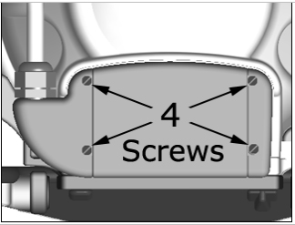

- 00000018WIA3052DD20GYZ
- id_131074313.2
- Jul 10, 2025 7:36:10 AM
1.5T 8-Channel High Res Brain Array Replacements
Prerequisites
| Personnel Requirements | |||
|---|---|---|---|
| Required Persons | Preliminary requirements | Procedure | Finalization |
| 1 | - | 30 minutes | - |
| Tools and Test Equipments | |||
|---|---|---|---|
| Item | Quantity | Part number | Manufacturer |
| ¼ inch flat blade screwdriver | 1 | - | - |
| Replacement Parts | |||
|---|---|---|---|
| Item | Quantity | Part number | Manufacturer |
| Refer to 1.5T 8-Channel High Resolution Brain Array FRUs document. | - | - | - |
Overview
Follow this process to replace FRUs for the 1.5T 8-channel High Resolution Brain Array Coil by Invivo, Mcat# M3335LZ.
Procedure
Cable Continuity Check
Troubleshooting should be performed by an authorized service engineer only.
Cable Replacement Procedure
To be performed by an authorized service engineer only.

To install the new cable, reverse the removal steps.
Mechanical Hardware Check
Lift the coil latches on both sides of the coil, and slide the coil to its superior and inferior extents. The coil must slide freely on the base with no binding or grinding. Make sure that the coil does not move with respect to the baseplate when the latches are locked down.
Replacement of Inferior or Superior Mirror


Latch Kit Replacement
Instructions for replacement are included with the FRU. 5030022.pdf
Head Bucket Kit Replacement
Instructions for replacement are included with the FRU. 5030023.pdf
Head Mirror Mount Kit Replacement
Instructions for replacement are included with the FRU. 5030024.pdf